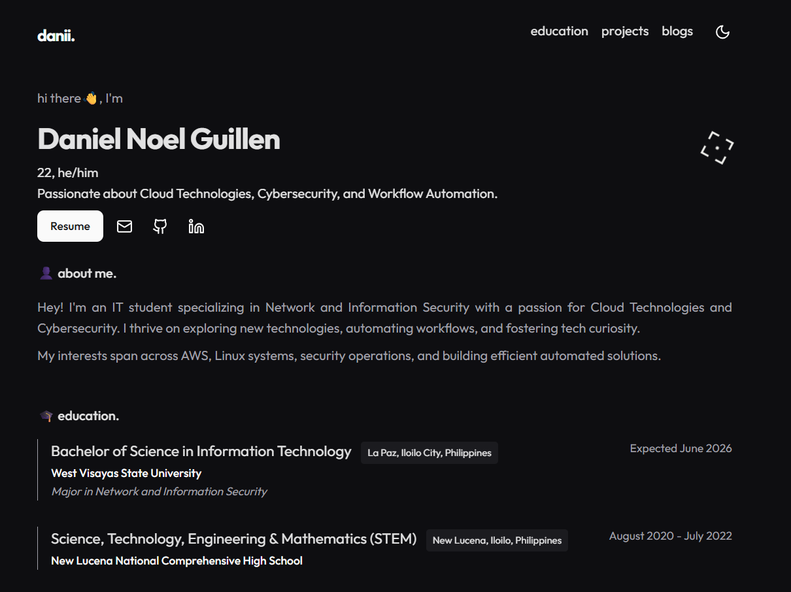

danii.tech
- Developed a personal portfolio website hosted on AWS S3 and Cloudfront with a custom .tech domain.
- Deployed using AWS infrastructure with Terraform for infrastructure as code.
- Implemented CI/CD pipeline with GitHub Actions for automated deployments to S3.
- Features a serverless visitor counter using AWS Lambda, DynamoDB, and API Gateway.
- HTML
- CSS
- JavaScript
- AWS
- Terraform
- GitHub Actions